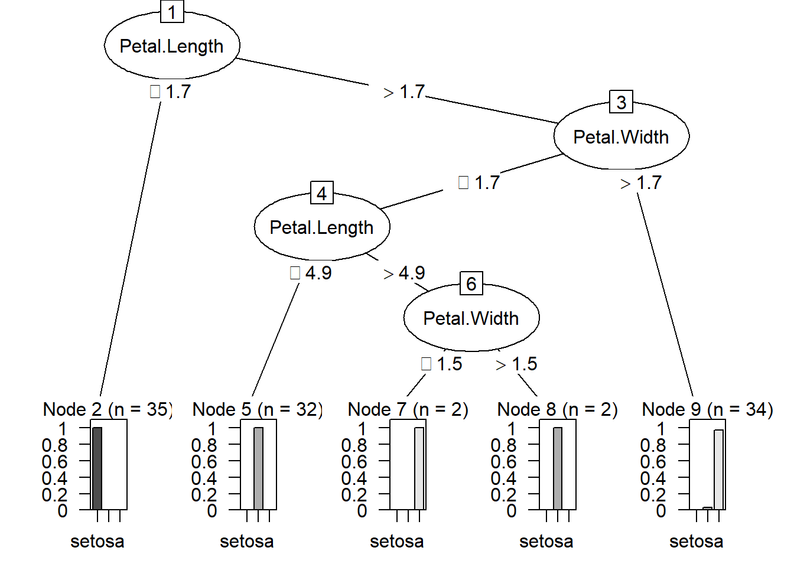

1 + 1[1] 2In pratice random forest surprass deicision tree in all categories but we will fit a decision tree first for learning reasons
1 + 1[1] 2You can add options to executable code like this
library(C50)
library(caret)Loading required package: ggplot2Loading required package: latticelibrary(C50)
library(caret)
# install.packages("randomForest")
library(randomForest)randomForest 4.7-1.1Type rfNews() to see new features/changes/bug fixes.
Attaching package: 'randomForest'The following object is masked from 'package:ggplot2':
margin# Split train/test data
ii <- createDataPartition(iris[, 5], p=.7, list=F) ## returns indices for train data
xTrain <- iris[ii, 1:4]; yTrain <- iris[ii, 5]
xTest <- iris[-ii, 1:4]; yTest <- iris[-ii, 5]
# Fit and plot model
mdl <- C5.0(x=xTrain, y=yTrain)
plot(mdl)
# Test model on testing data
yTestPred <- predict(mdl, newdata=xTest)
confusionMatrix(yTestPred, yTest) # predicted/trueConfusion Matrix and Statistics
Reference
Prediction setosa versicolor virginica
setosa 13 0 0
versicolor 2 15 2
virginica 0 0 13
Overall Statistics
Accuracy : 0.9111
95% CI : (0.7878, 0.9752)
No Information Rate : 0.3333
P-Value [Acc > NIR] : 8.467e-16
Kappa : 0.8667
Mcnemar's Test P-Value : NA
Statistics by Class:
Class: setosa Class: versicolor Class: virginica
Sensitivity 0.8667 1.0000 0.8667
Specificity 1.0000 0.8667 1.0000
Pos Pred Value 1.0000 0.7895 1.0000
Neg Pred Value 0.9375 1.0000 0.9375
Prevalence 0.3333 0.3333 0.3333
Detection Rate 0.2889 0.3333 0.2889
Detection Prevalence 0.2889 0.4222 0.2889
Balanced Accuracy 0.9333 0.9333 0.9333In this exercise we fit a random forest to the iris dataset using the train function with method rf. We fix the number of trees (ntree), and the number of variables available for splitting at each tree node (mtry)
# Fit Random Forest model
# Fix ntree and mtry
set.seed(1040) # for reproducibility
mdl <- train(x=xTrain, y=yTrain,
method='rf',
ntree=200, ## there is no optimal value unlike in the k=n
## we can't overfit by using too many tree, in the asseessment if we use 200 dorka will be happy
tuneGrid=data.frame(mtry=2))
print(mdl)Random Forest
105 samples
4 predictor
3 classes: 'setosa', 'versicolor', 'virginica'
No pre-processing
Resampling: Bootstrapped (25 reps)
Summary of sample sizes: 105, 105, 105, 105, 105, 105, ...
Resampling results:
Accuracy Kappa
0.9461484 0.9173398
Tuning parameter 'mtry' was held constant at a value of 2Kappa is another performance metric but for this module it is enough to focus on the accuracy
Next we test the fitted model
# Test model on testing data
yTestPred <- predict(mdl, newdata=xTest)
confusionMatrix(yTestPred, yTest) # predicted/trueConfusion Matrix and Statistics
Reference
Prediction setosa versicolor virginica
setosa 15 0 0
versicolor 0 15 2
virginica 0 0 13
Overall Statistics
Accuracy : 0.9556
95% CI : (0.8485, 0.9946)
No Information Rate : 0.3333
P-Value [Acc > NIR] : < 2.2e-16
Kappa : 0.9333
Mcnemar's Test P-Value : NA
Statistics by Class:
Class: setosa Class: versicolor Class: virginica
Sensitivity 1.0000 1.0000 0.8667
Specificity 1.0000 0.9333 1.0000
Pos Pred Value 1.0000 0.8824 1.0000
Neg Pred Value 1.0000 1.0000 0.9375
Prevalence 0.3333 0.3333 0.3333
Detection Rate 0.3333 0.3333 0.2889
Detection Prevalence 0.3333 0.3778 0.2889
Balanced Accuracy 1.0000 0.9667 0.9333We can use the varImp function to estimate the importance of each variable.
# Variable importance by mean decrease in gini index
varImp(mdl$finalModel) Overall
Sepal.Length 7.750468
Sepal.Width 1.735341
Petal.Length 27.585760
Petal.Width 32.108383